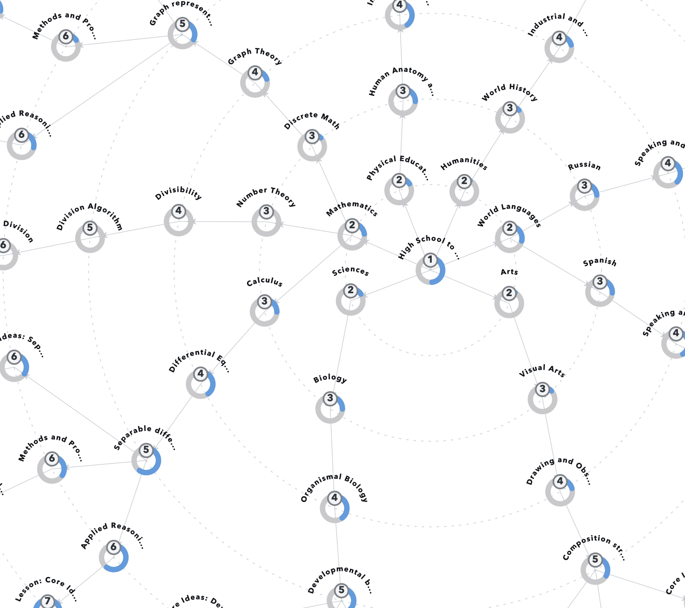
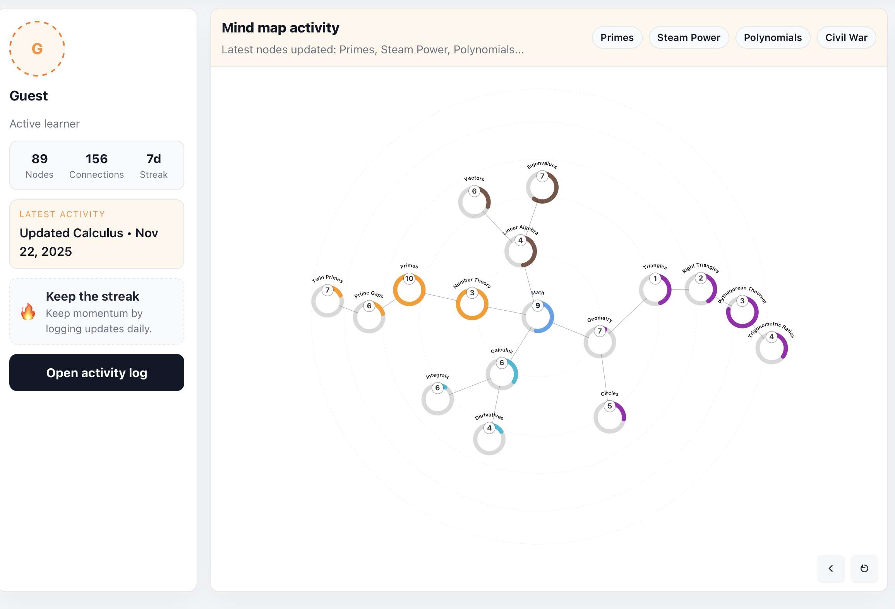
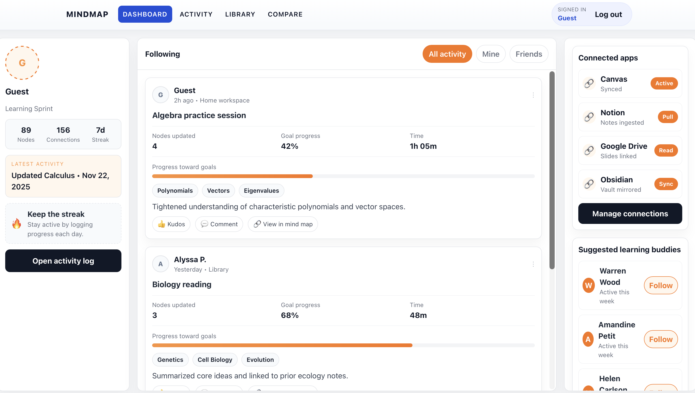
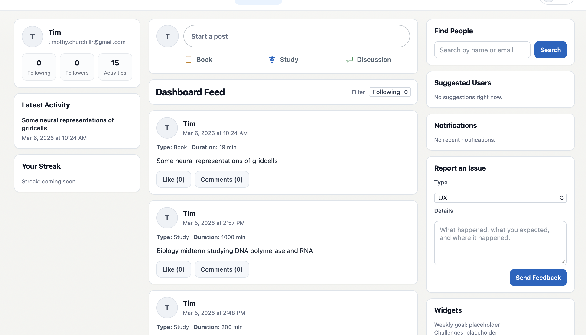

Shared Concept Structure
The core map exists as a canonical knowledge structure in the system. Every user references the same conceptual backbone, which enables consistent interpretation and comparable progress signals.
A living map of understanding, built from real learning activity.
Section 1 - Big Idea
Transcripts, note dumps, and completed tasks all miss the same thing: conceptual topology. The Knowledge Map treats understanding as a graph of ideas that expands as someone learns. Progress is visible, cumulative, and anchored to actual work.

Current graph prototype showing a user-facing map with visible concepts and evolving mastery intensity.
The map is a concept graph with hierarchical depth. It starts at broad domains such as mathematics, sciences, humanities, and world languages, then decomposes into subfields and eventually lesson-sized, fine-grained topics. It is designed to mirror how ideas are related in reality, not just how courses are listed in catalogs.
The core map exists as a canonical knowledge structure in the system. Every user references the same conceptual backbone, which enables consistent interpretation and comparable progress signals.
Mathematics → Number Theory → Divisibility → Division Algorithm → Integer Division
This depth is essential. A shallow taxonomy cannot represent the shape of understanding; a deep graph can.
The map is both content structure and personal progress structure: one part defines what ideas exist, the other part records how mastery accumulates for each individual.
Users do not start with the full map exposed. The full structure is present in the backend, but the visible map is sparse at first. As activity is logged and mastery appears on specific nodes, those nodes become visible. The map grows outward from real engagement.
Nodes are revealed when the user has demonstrated meaningful work connected to those concepts. Visibility is not theoretical curriculum coverage; it is evidence-backed learning activity.
Over time, each profile becomes a unique intellectual map that reflects what that person has studied, where they have depth, and where they have only early exposure.

Before and after graph snapshots that make growth visible as users continue posting and mastery propagates through parent concepts.
The project loop starts with user activity posts. A post can include duration, activity type, and a written description of what was actually worked on. That description is not just social content: it is input to a concept inference pipeline.
User logs work session details and writes what they studied or built.
ML and text understanding infer likely fine-grained leaf concepts from the description.
One or more leaf nodes are selected with confidence-aware weighting.
Matched nodes are incremented and the map state is recalculated for visibility and rollups.
Mastery is continuous, not binary. A relevant activity increases one or more leaf nodes by a measured amount. That local gain then propagates upward through parent concepts with attenuation. The result is a map that records both depth at specific nodes and breadth across larger domains.
Leaf node increment: Integer Division + delta
Parent propagation: Division Algorithm + delta * w1
Higher parent: Divisibility + delta * w2
Domain rollup: Number Theory + delta * w3
Higher-level concepts become meaningful summaries of many lower-level interactions. This is what makes the map interpretable over months and years, rather than just sessions.
The system combines personal knowledge tracking with social learning behavior. Users do not just post updates; they build a visible representation of their intellectual life. The feed provides accountability, while the map provides structure and cumulative meaning.
Individuals get a long-horizon record of what they have actually engaged with, not just what they planned to study.
Peers, collaborators, and mentors can see a structured profile of learning activity, not only a stream of isolated posts.
The architecture separates stable knowledge structure from user-specific state. A shared graph captures the curriculum and concept hierarchy. Per-user mastery overlays that shared graph without duplicating core topology. Social and account workflows remain in relational storage, integrated with activity processing.
Graph database stores the shared concept hierarchy, parent-child relations, and traversal logic used for propagation and visibility.
Per-user mastery values are layered on top of shared nodes, enabling personalized maps against a common conceptual structure.
Relational data model handles users, posts, feeds, and engagement metadata with transactional guarantees.
NLP/ML concept assignment maps post text to leaf concepts, then triggers mastery propagation and map state updates.


UI iteration snapshots from the project that show how the feed and map surfaces are converging into a single learning interface.
Most learning tools capture artifacts, tasks, or memory prompts. The Knowledge Map captures conceptual structure and evolving understanding.
Notes preserve content, but they rarely expose how ideas connect or where mastery is concentrated.
Flashcards optimize recall, but do not represent conceptual topology across domains and subdomains.
Completed tasks are binary events, while understanding is partial, layered, and cumulative.
Post feeds show activity streams, but do not convert activity into an interpretable knowledge graph.